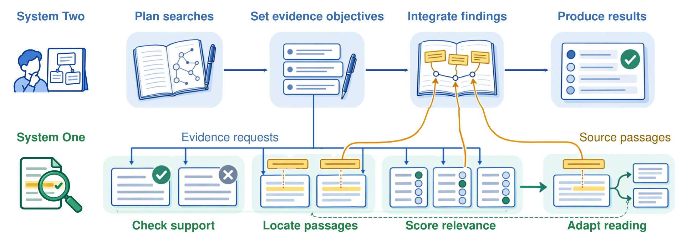
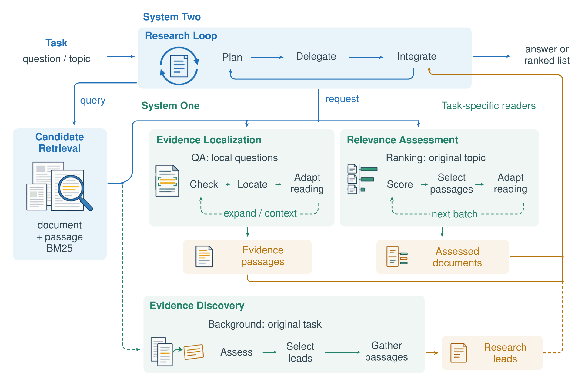
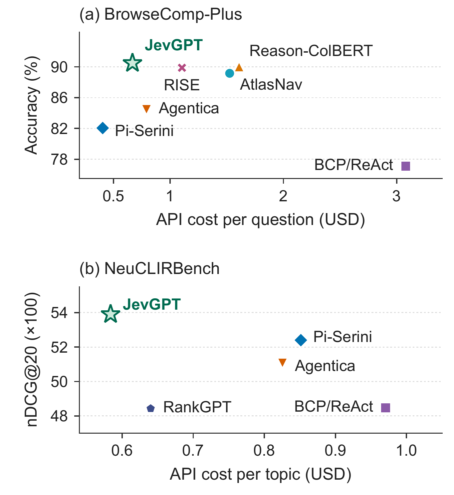
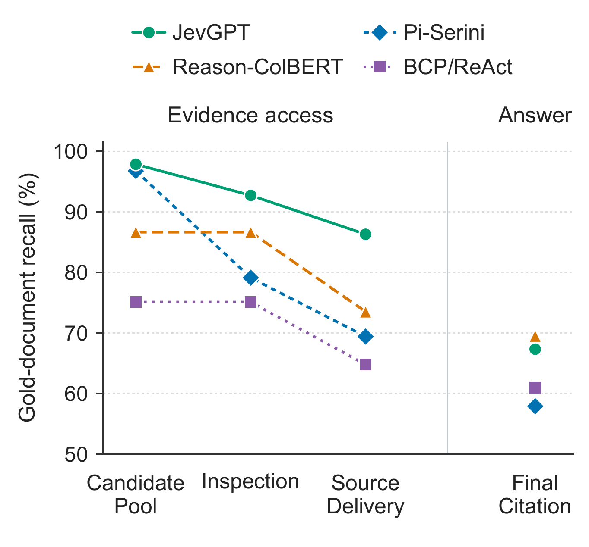
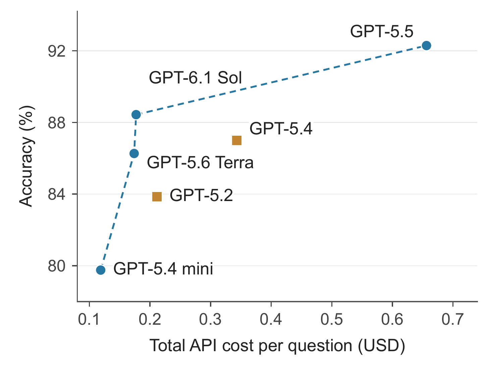

JevGPT’s dual-system architecture for autonomous research. System Two uses GPT to plan searches and integrate findings into answers or rankings. System One uses Jev to guide parallel evidence inspection and return source passages; the dashed loop indicates adaptive reading.
Autonomous research agents must acquire and reason over evidence within a limited budget. Yet relevant sources can remain uninspected or unused, leaving a gap between retrieval coverage and the evidence that informs research. The challenge is to align fast local judgments with changing evidence needs and feed their findings back into research decisions. We introduce JevGPT, a dual-system architecture for autonomous research that couples fast evidence processing with deliberative research planning. System Two sets evidence objectives and integrates findings, while System One locates support, assesses relevance, and guides further inspection. Independent source judgments run in parallel; selected original passages inform the next research step. Experiments on fixed-corpus question answering and document ranking show that JevGPT achieves leading task performance, with faster completion and lower cost than comparably effective research agents. Evidence analysis shows broader source inspection and greater coverage of supporting documents in the research loop, highlighting efficient evidence processing as a route to more capable autonomous research.
Key observation. Research planning and local evidence judgments require different scopes of information. Planning uses the accumulated investigation, whereas a source judgment can be bounded by an explicit evidence objective. Independent judgments under that objective can run in parallel, while their findings return to the research process to inform the next objective.

Overview of JevGPT. System Two plans research and integrates evidence; System One guides evidence localization, relevance assessment, and discovery. The readers return original passages with local judgments. Dashed loops adapt reading; the dashed discovery branch supplies additional research leads asynchronously.
We evaluate on BrowseComp-Plus (fixed-corpus question answering, 830 questions) and NeuCLIRBench (document ranking, 105 topics). JevGPT achieves leading task performance at lower cost than comparably effective research agents, and it also completes research faster.

Quality and API cost. Stars mark JevGPT; upper left is better. Costs include both systems for JevGPT; the NeuCLIRBench panel shows GPT-based methods.
BrowseComp-Plus results on 830 questions. Resources are per-question means; S2/S1 denote the two systems’ API costs. Bold and underlining mark the best and second-best values, including ties.
| Performance | Resources / question | Cost / question ($) | |||||
|---|---|---|---|---|---|---|---|
| Method | Retriever | Accuracy (%) ↑ | Tokens (K) ↓ | Searches ↓ | Time (s) ↓ | S2 ↓ | S1 ↓ |
| BCP/ReAct | BM25 | 77.11 | 2169 | 24.87 | 182.1 | 3.0798 | — |
| Pi-Serini | BM25 | 82.05 | 266 | 14.41 | 112.6 | 0.4053 | — |
| Agentica | BM25 | 84.46 | 335 | 33.88 | 111.7 | 0.7919 | — |
| AtlasNav | BM25 + map | 89.16 | 948 | 20.54 | 144.0 | 1.5257 | — |
| RISE | BM25 | 89.88 | 609 | 26.08 | 111.0 | 1.1050 | — |
| Reason-ColBERT | ColBERT | 90.00 | 931 | 16.36 | 136.2 | 1.6090 | — |
| JevGPT | Hybrid BM25 | 90.48 | 433 | 9.13 | 91.7 | 0.6081 | 0.0600 |
NeuCLIRBench results on 105 topics. Resources are per-topic means. Bold and underlining mark the top two values; dashes denote inapplicable or unreported resources.
| Performance | Resources / topic | Cost / topic ($) | ||||||
|---|---|---|---|---|---|---|---|---|
| Method | Retriever | nDCG@20 ↑ | F1@20 (%) ↑ | Tokens (K) ↓ | Searches ↓ | Time (s) ↓ | S2 ↓ | S1 ↓ |
| BM25 | BM25 | 0.3608 | 26.13 | — | — | — | — | — |
| RM3 | BM25 | 0.3622 | 26.17 | — | — | — | — | — |
| Patapsco | BM25 | 0.3485 | 24.80 | — | — | — | — | — |
| Qwen3-Reranker | Fusion | 0.5138 | 35.06 | — | — | — | — | — |
| RankGPT | BM25 | 0.4843 | 32.48 | 76 | 1.00 | 141.3 | 0.6402 | — |
| BCP/ReAct | BM25 | 0.4847 | 30.60 | 853 | 15.42 | 186.8 | 0.9707 | — |
| Agentica | BM25 | 0.5107 | 34.19 | 516 | 32.85 | 211.0 | 0.8256 | — |
| Pi-Serini | BM25 | 0.5240 | 35.02 | 708 | 7.35 | 177.0 | 0.8515 | — |
| JevGPT | Hybrid BM25 | 0.5390 | 36.10 | 158 | 2.68 | 79.3 | 0.5756 | 0.0082 |

Gold-document coverage. Mean per-question recall over 830 BrowseComp-Plus questions, measured separately for each document set under native retrieval settings. JevGPT and Pi-Serini have similar candidate-pool coverage, yet JevGPT achieves higher recall for both inspection and delivery of original text to System Two.

Cost and accuracy across System Two models. Each point represents JevGPT with a different System Two model on 415 matched BrowseComp-Plus questions. API cost includes both systems. The dashed line marks the observed Pareto frontier.
@article{sun2026jevgpt,
title = {{JevGPT}: Thinking Fast and Slow in Autonomous Research},
author = {Sun, Yasheng and Dai, Yanning and Chen, Yimeng and Li, Nanbo
and Laakom, Firas and Xu, Yifan and Pi{\k{e}}kos, Piotr
and Ostaszewski, Mateusz and Wang, Wenyi and Luo, Cheng
and Wang, Yuhui and Schmidhuber, J{\"u}rgen},
journal = {arXiv preprint arXiv:2610.18272},
year = {2026}
}